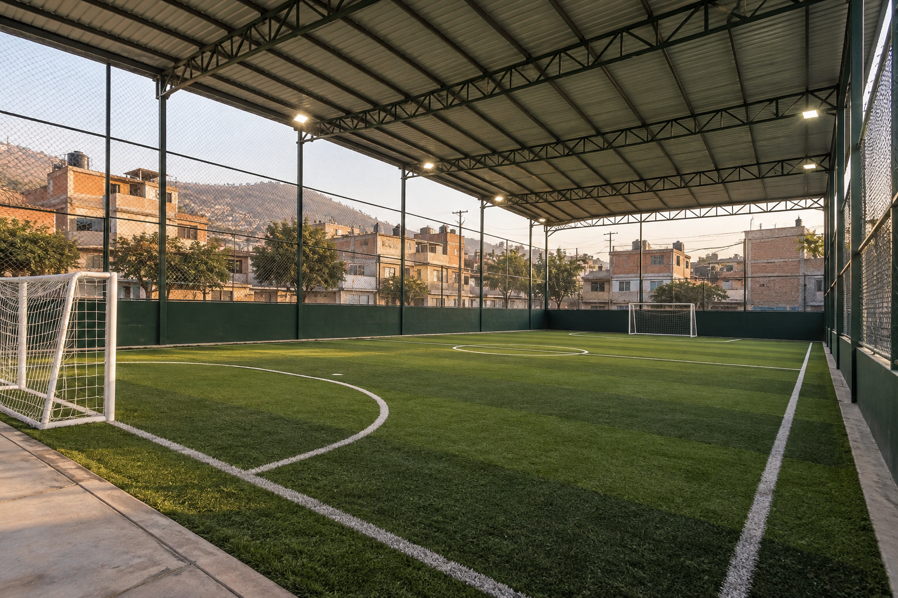
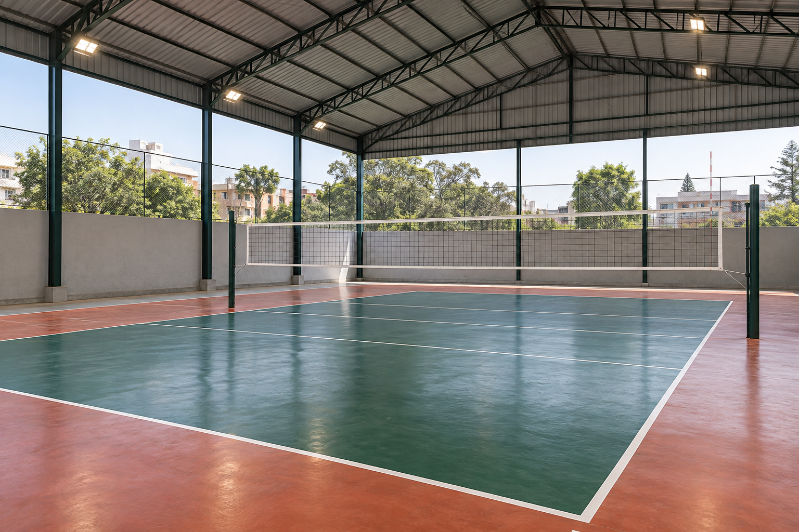

Canchas de fútbol
7 canchas de grass sintético.
4 con techo y 3 al aire libre.
Hasta 14
jugadores por cancha.
Canchas y servicios para disfrutar con tu grupo.
Negocio ficticio: imágenes
ilustrativas de las canchas.

7 canchas de grass sintético.
4 con techo y 3 al aire libre.
Hasta 14
jugadores por cancha.

3 canchas de losa.
1 con techo y 2 al aire libre.
Hasta 12 jugadores
por cancha.
Espacios para cambiarte y prepararte antes de jugar.
Espacio para los vehículos de los visitantes.
Bebidas para acompañar la actividad deportiva.
Balones para practicar fútbol o vóley.
Imágenes ilustrativas generadas para La Canchita, un negocio ficticio.
Selecciona una imagen para verla ampliada en otra pestaña.
Video ilustrativo de 20 segundos, sin audio. Incluye rótulos de cada tipo de cancha.
Contenido del video: fútbol con techo, fútbol al aire libre, vóley con techo y vóley al aire libre. Todas las escenas son imágenes generadas; no muestran instalaciones reales.
Descargar video ilustrativoTodas las canchas tienen iluminación.
Los costos y condiciones de servicios adicionales están por definir.
Consultar precios